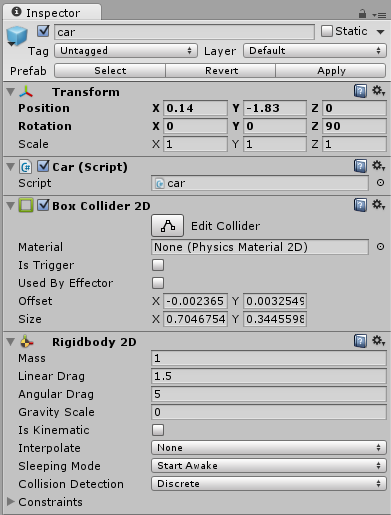
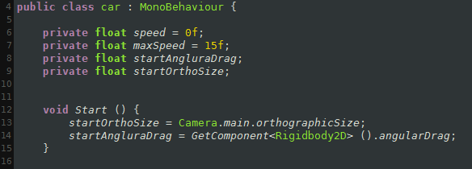
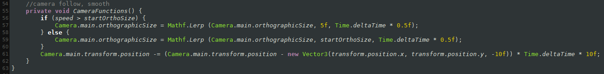
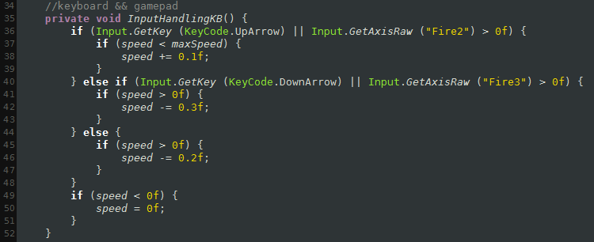
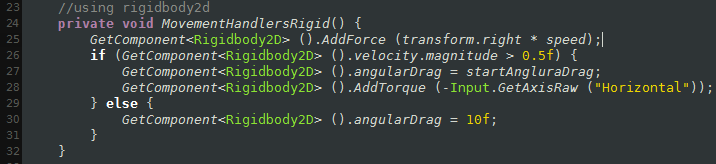
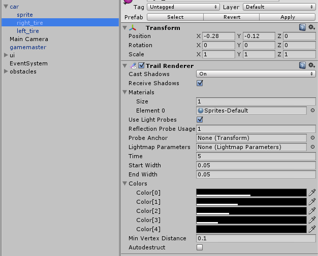
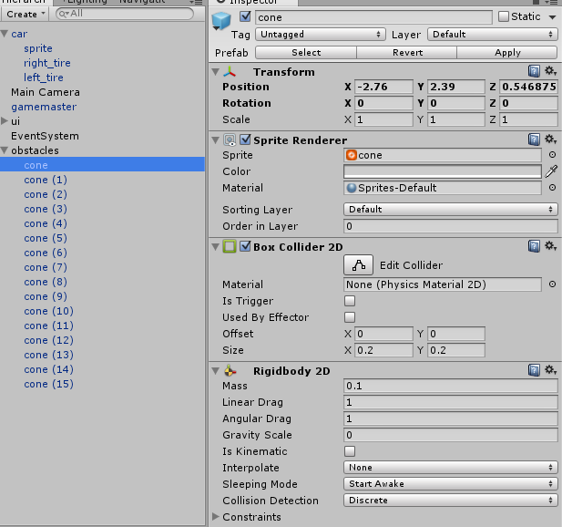
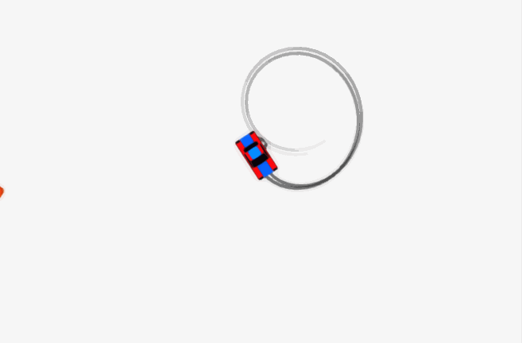

1. Create new game object
This will be our car object. Add awesome graphics or just use my sprites (which are awesome too, just fyi).
See sidebar for the sprites.
Make sure you add the sprite as child of the car game object, so you can
rotate the sprite 270 degrees on it's Z-axis when the parent (ie. car object) is selected, because we want the car to be facing towards the X-axis (red).
2. Add rigidbody2D and box collider to your game object.
You can use my settings for the ridigbody2d as shown in the picture or test different values yourself. By changing linear drag your car will
accelerate/deaccelerate slower on higher values and by changing angular drag you can manipulate how fast the car turns (rotation on z-axis).
Remember to change gravity scale to zero.
3. Add code to our car game object
You can find full code in the sidebar! (pastebin)

using UnityEngine;
using System.Collections;
public class car : MonoBehaviour {
private float speed = 0f;
private float maxSpeed = 15f;
private float startAngularDrag;
private float startOrthoSize;
void Start () {
startOrthoSize = Camera.main.orthographicSize;
startAngularDrag = GetComponent ().angularDrag;
}
First we want to declare few variables and write a start function. You don't need to import or use unorthodox namespaces in this code, just go with the defaults.
You can change the maxSpeed variable higher or lower.
void FixedUpdate () {
CameraFunctions ();
InputHandlingKB ();
MovementHandlersRigid ();
}
Because we are using Unity 5 physics system, we want to use FixedUpdate function. These three functions, inside the FixedUpdate, are simply everything we need. We'll delve into them now!

//camera follow, smooth
private void CameraFunctions() {
if (speed > startOrthoSize) {
Camera.main.orthographicSize = Mathf.Lerp (Camera.main.orthographicSize, 5f, Time.deltaTime * 0.5f);
} else {
Camera.main.orthographicSize = Mathf.Lerp (Camera.main.orthographicSize, startOrthoSize, Time.deltaTime * 0.5f);
}
Camera.main.transform.position -= (Camera.main.transform.position - new Vector3(transform.position.x, transform.position.y, -10f)) * Time.deltaTime * 10f;
}
CameraFunctions() is responsible for moving our main camera smoothly and zooming in and out as the car's speed increases.

//keyboard && gamepad
private void InputHandlingKB() {
if (Input.GetKey (KeyCode.UpArrow) || Input.GetAxisRaw ("Fire2") > 0f) {
if (speed < maxSpeed) {
speed += 0.1f;
}
} else if (Input.GetKey (KeyCode.DownArrow) || Input.GetAxisRaw ("Fire3") > 0f) {
if (speed > 0f) {
speed -= 0.3f;
}
} else {
if (speed > 0f) {
speed -= 0.2f;
}
}
if (speed < 0f) {
speed = 0f;
}
}
InputHandlingKB(), as the name suggests, it handles the player's key presses. in our case it takes care of acceleration and braking. If the player doesn't press anything, the car will slowly lose speed.

//using rigidbody2d
private void MovementHandlersRigid() {
GetComponent<Rigidbody2D> ().AddForce (transform.right * speed);
if (GetComponent<Rigidbody2D> ().velocity.magnitude > 0.5f) {
GetComponent<Rigidbody2D> ().angularDrag = startAngularDrag;
GetComponent<Rigidbody2D> ().AddTorque (-Input.GetAxisRaw ("Horizontal"));
} else {
GetComponent<Rigidbody2D> ().angularDrag = 10f;
}
}
MovementHandlersRigid() is the most important part of this code. It actually makes our car to move and turn.
AddForce simply adds force in the direction of our car game object's transform right, which is the red axis. (This is why we rotated the sprite!)
First we check if the velocity vector's magnitude is greater than 0.5f, which means that if the car is moving really slowly you can't actually turn. This prevents the car to spin around while not moving forward.
I use here Input.GetAxisRaw("Horizontal") to get a value from -1.0 to 1.0, meaning that you can use analogical input devices such as gamepad's analog sticks to turn smoothly. This also works with keyboard input but it returns 1, -1 or 0.
AngularDrag is just a small touch, that will make the car seem heavier and slide a little bit on extremely slow speeds.
4. Add tire tracks
Add two empty game objects to your car game object as children and then add trail renderers to each of them. Simple, but effective!
5. Create some obstacles
Create new game object, select the cone sprite and add box collider and rigidbody2D to it. Then save if as a cone prefab.
Change it's mass to 0.1 that the car can push it around and don't forget the gravity scale.
6. Ready
Save your code and add it to the car game object and you are all set.
